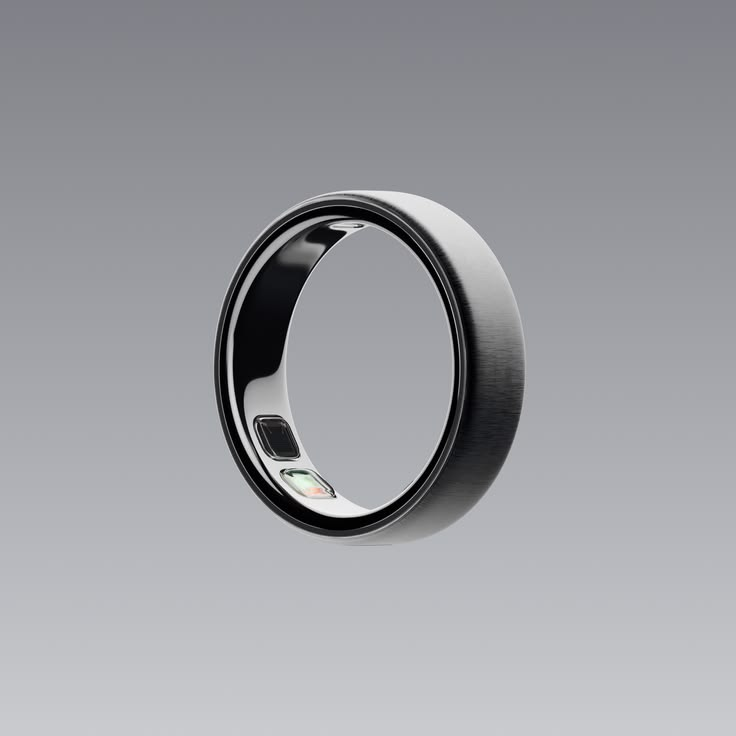

A new kind of wearable
A ring, and the garden it grows.
Designed for presence, not distraction.
What is WeBloom
WeBloom reads your heart rate, voice, and motion - not to give you more data, but to surface the patterns that help you feel more present, connected, and alive. Every signal becomes a quiet reflection, not a dashboard.
There are no notifications. No streaks. No scores. Just a garden that grows with your most meaningful moments.
Features
WeBloom reads heart rate, voice, and motion. What surfaces is never the numbers - it's the pattern they add up to.
BloomNote
Each evening, a single sentence -- not what happened, but what it felt like.
Bloom Calendar
Where every meaningful day blossoms into your garden -- quiet days belong too.
SynBloom
When two rings meet, shared moments grow in both gardens, at once.
Personal Insights
Not a dashboard. A quiet understanding of what helps you feel most alive.
Bloom Calendar
Each square is a day the ring was with you. Deeper green means more moments bloomed — quiet days are pale, full days are rich. Click any day to see your body's rhythms and the friends you shared time with.
以数据为墨，情感为笔——每一朵花都是一次相遇的印记，每一抹绿都是一段心绪的涟漪。WeBloom将心跳、步伐、体温与对话编织成可视化的诗意图谱，让科技不再冷冰冰地计数，而是温柔地记住：那天你与谁并肩走过，说了什么让彼此安静下来的话，在哪里同时停下脚步，为什么笑得前仰后合。这不是仪表盘，是一座会呼吸的关系花园，一座用真实瞬间浇灌的记忆森林。每一次回望，都是一次重新绽放。
— WeBloom · 数字交互 · 关系可视化↗ 在小红书观看完整视频BloomNote - AI Reflection
Every evening, WeBloom writes one sentence -- not a log of what happened, but a small reflection on what it felt like.
JUL 25
Today, you found calm in unexpected silence.
SynBloom
When two WeBloom rings meet, they don't exchange contacts — they exchange presence. Heartbeats align, silence deepens, and a shared bloom takes root in both gardens.
SynBloom is not a handshake protocol — it's a quiet acknowledgment between two people wearing WeBloom. When rings come close, they each record the encounter: heart rate at the moment of meeting, the duration you stayed together, the rhythm of your conversation.
Later that evening, both gardens bloom with the same new flower — a shared memory, grown from two perspectives. No notifications, no pings. Just a petal that says: this moment mattered to both of us.
Our Inspiration
— Antoine de Saint-Exupéry, The Little Prince
The Little Prince looked at the garden of five thousand roses and felt — for a moment — that his own rose was not unique after all. But the fox taught him otherwise. What made her irreplaceable was not her petals, but the hours he spent beside her: watering, sheltering, listening.
This is the quiet pulse beneath every line of WeBloom. Relationships are not found — they are grown. They are not measured in likes, views, or streaks. They are measured in heartbeats that slow when you truly listen, in silences that feel fuller than speech, in the small daily acts of care that accumulate into something unbreakable.
The fox asked the Prince to tame him — to create ties. To make one being need another in a world full of strangers. Every SynBloom moment between two WeBloom rings is a small act of taming: a shared heartbeat logged, a conversation remembered, a flower that blooms in both gardens at once because someone chose to be present.
The rose under glass does not grow because she is observed from a distance. She grows because the Prince returns to her, day after day, with his care and his attention. So does every relationship worth keeping.
Designed for presence, not distraction.
Built to preserve meaning, not data.
WeBloom Ring
A ring that measures what matters — heart, voice, motion — and turns every signal into a quiet reflection, not a dashboard.

WeBloom Ring requires iPhone with iOS 16 or later, or Android 13 or later. Battery life varies by use. SynBloom requires two WeBloom rings within 3 meters. Water resistance rating based on ISO 22810:2010. Not for scuba diving or high-velocity water. Specifications subject to change. WeBloom is a concept device — shipping 2027.